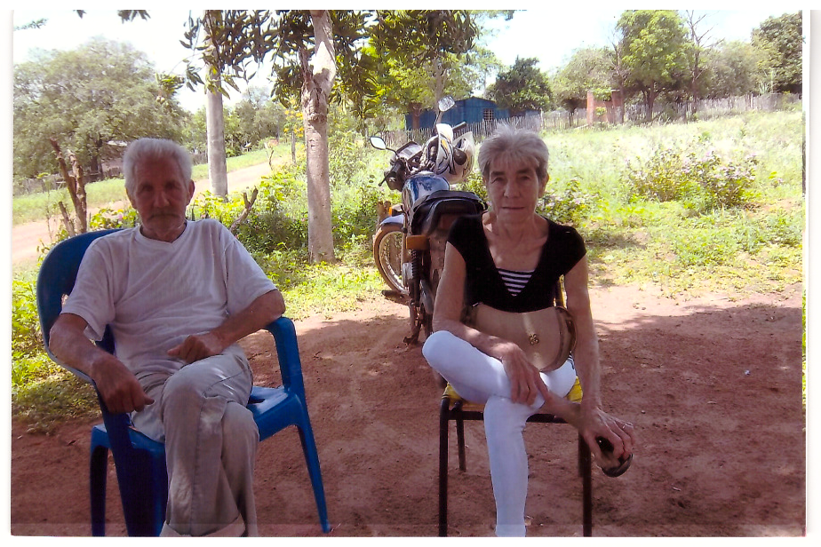
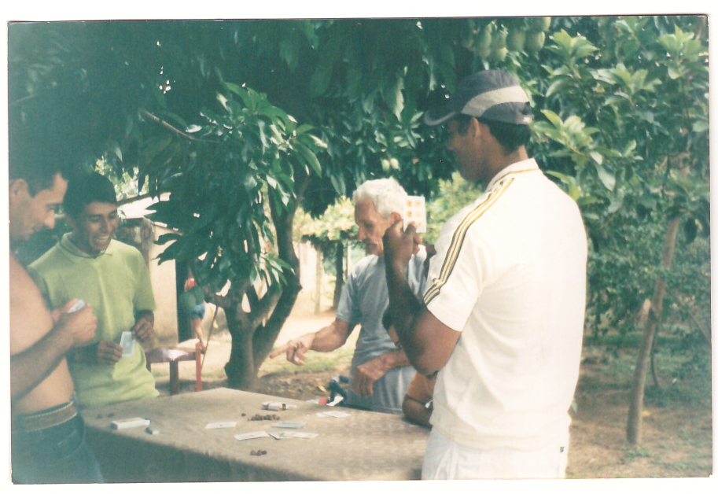
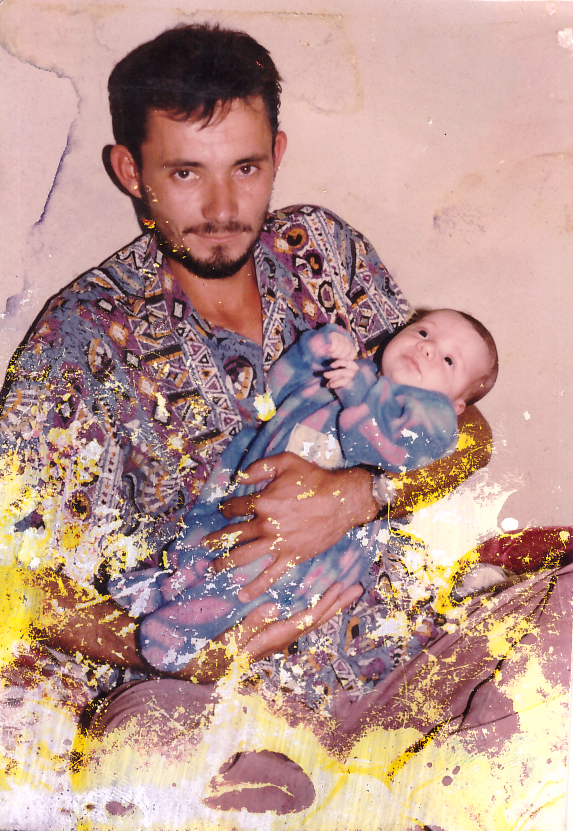
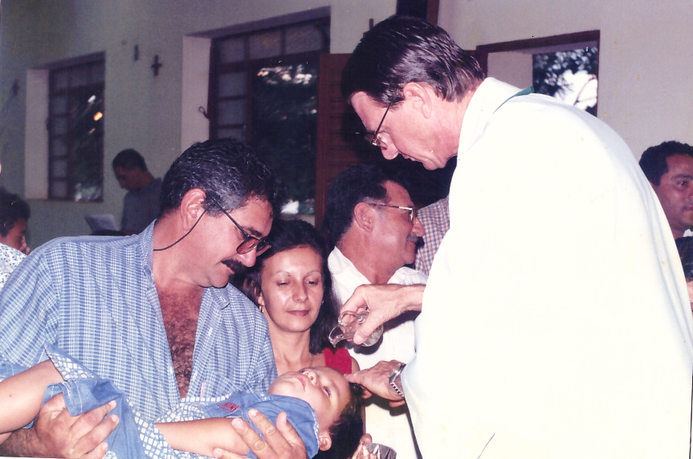
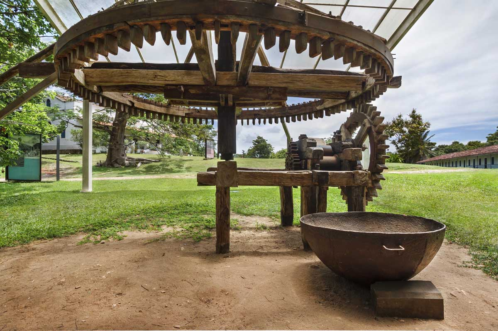

Sobre Caracol
Caracol é um município brasileiro localizado no estado de Mato Grosso do Sul. Fundado em 1965, o município tem uma rica história cultural e tradicional que merece ser preservada e celebrada.
Este projeto tem como objetivo resgatar e manter viva a memória dos moradores que contribuíram para a formação da identidade cultural de nossa cidade, através de fotografias, histórias e registros das tradições locais.
Galeria de Fotos
Família tradicional (década de 1970)
Entre o cheiro do churrasco de chão, a música do baile carapé e as festas de aniversário, essas imagens guardam a essência das tradições que deram identidade à nossa terra e às famílias que a construíram."




"Mais que comida, um ritual que celebrava amizade e alegria em cada festa."



"Em cada carta, uma história; em cada rodada, lembranças de festas inesquecíveis."




"Irmã Esperança – sua dedicação e amor pela comunidade jamais serão esquecidos."


Família tradicional (década de 1970)
Equipamento tradicional usado par aprodução de rapadura.

Praça central (década de 1980)
Vista da praça principal com antiga igreja matriz ao fundo.
Histórias e Depoimentos
Os Primeiros Habitantes
Contam os mais antigos que os primeiros moradores chegaram aqui na década de 1950, atraídos pelas terras férteis e pela beleza natural da região. Muitas famílias vieram do sul do país em busca de novas oportunidades.
— Seu Antônio, 78 anos
Festa do Divino Espírito Santo
A tradicional festa do Divino era o evento mais esperado do ano. Toda a comunidade se reunia para celebrar com comidas típicas, música dança. As mulheres preparavam o famoso furrundú e os homens cuidavam do churrasco.
— Dona Maria, 82 anos
O Primeiro Moedor de Cana
Meu avô trouxe o primeiro moedor de cana para a região em 1962. Era movido a bois e todos os vizinhos traziam sua cana para moer. No final do dia, as crianças se reuniam para saborear o caldo de cana fresco.
— João da Silva, 65 anos
Tradições Locais
Produção de Rapadura
A rapadura era um dos principais produtos da região. O processo começava com o plantio da cana-de-açúcar, seguido pela colheita manual, moagem e cozimento do caldo em tachos de cobre até atingir o ponto exato. Depois, a mistura era colocada em formas para solidificar.
Artesanato em Palha de Milho
As mulheres mais velhas ensinavam as mais novas a trançar a palha de milho para criar esteiras, chapéus e bolsas. Essa tradição ainda es mantida por algumas artesãs locais.
Festas Religiosas
As festas em honra aos santos padroeiros eram momentos de intensa devoção e confraternização. A comunidade se unia para decorar a igreja, preparar as comidas e organizar as procissões.
Artesanatos
Chinelos Personalizados
Artesanato feito por Idalina , oferecendo chinelos únicos e criativos, personalizados de acordo com o gosto do cliente.
Bonecas de Pano
Feitas com carinho por Cleir Leite, essas bonecas de pano são artesanais, coloridas e cheias de detalhes encantadores.
Hinos
Hino de Caracol
Nesta terra, de tantas belezas entre cerros
Descansa a natureza e o vento anuncia com certeza
Por Deus ela foi abençoada.
Caracol terra querida com tradição
Seu povo abriga trás a fronteira a fala amiga
Faz do trabalho a integração.
Seu nome está, na sua história menina por teira
Hoje crescida Caracol banhada por um rio
Que aquece seu nome no fundo brilha iluminada pelo sol.
Caracol lugar tão lindo
Onde memórias cultivadas neste chão
Acolheu famílias e desbravadores
Como as de João, Maurilio e Libindo.
Todos juntos no mesmo princípio
Das chácaras, fazenda e distritos
Crescendo em paz o municipio
Para que ensinando também se aprenda.
Caracol seu nome gira como dança
Que faz bater no coração
Seu nome no tempo não espera d'estarte
Cantamos com emoção.
Seu nome no tempo, não espera d'estarte
Recantamos com emoção.
Hino de Mato Grosso do Sul
Os celeiros de farturas
Sob um céu de puro azul
Reforjaram em Mato Grosso do Sul
Uma gente audaz
Tuas matas e teus campos
O esplendor do Pantanal
E teus rios são tão ricos
Que não há igual
A pujança e a grandeza
De fertilidades mil
São o orgulho e a certeza
Do futuro do Brasil
Moldurados pelas serras
Campos grandes: Vacaria
Rememoram desbravadores
Heróis, tanta galhardia!
Vespasiano, Camisão
E o tenente Antonio João
Guaicurus, Ricardo Franco
Glória e tradição!
A pujança e a grandeza
De fertilidades mil
São o orgulho e a certeza
Do futuro do Brasil
Composição: Jorge Antonio Siuff / Otávio Gonçalves Gomes